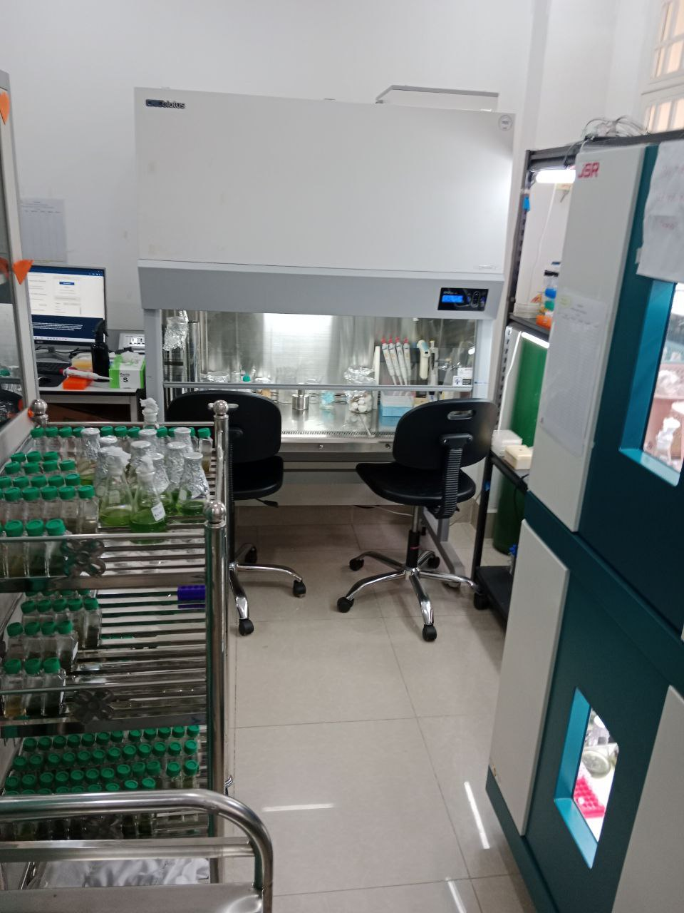
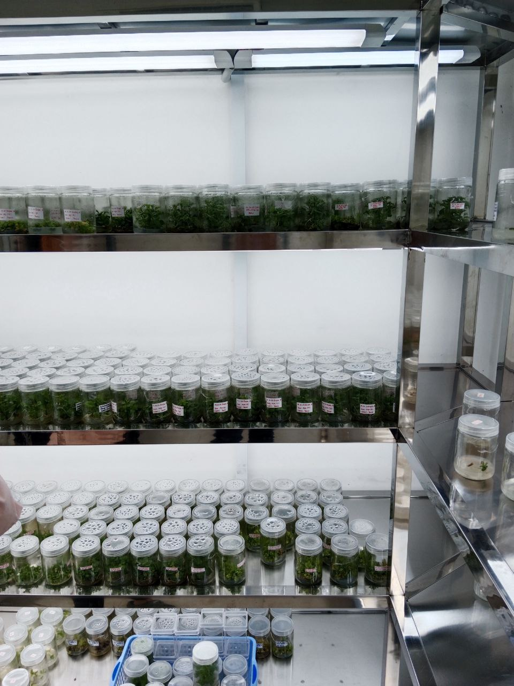
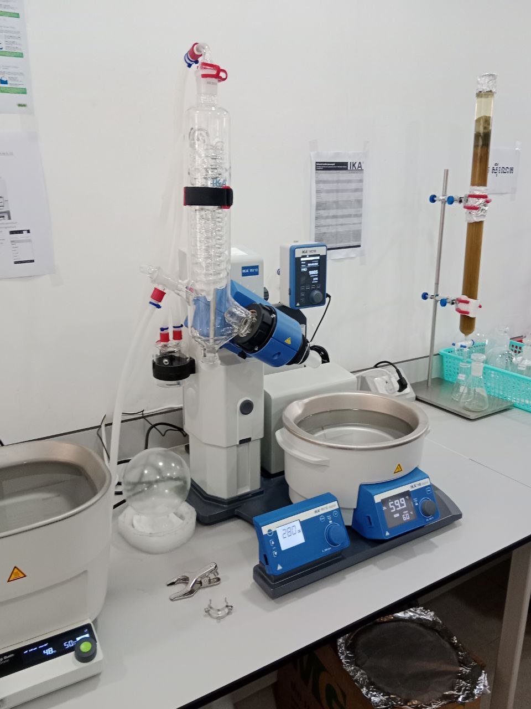
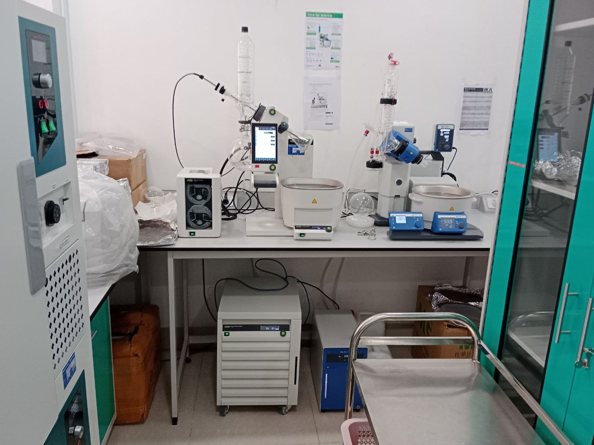
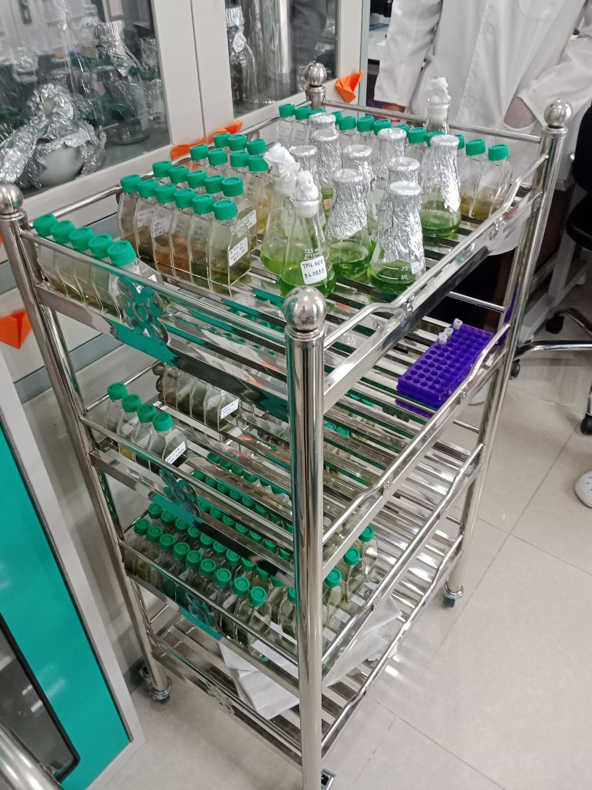
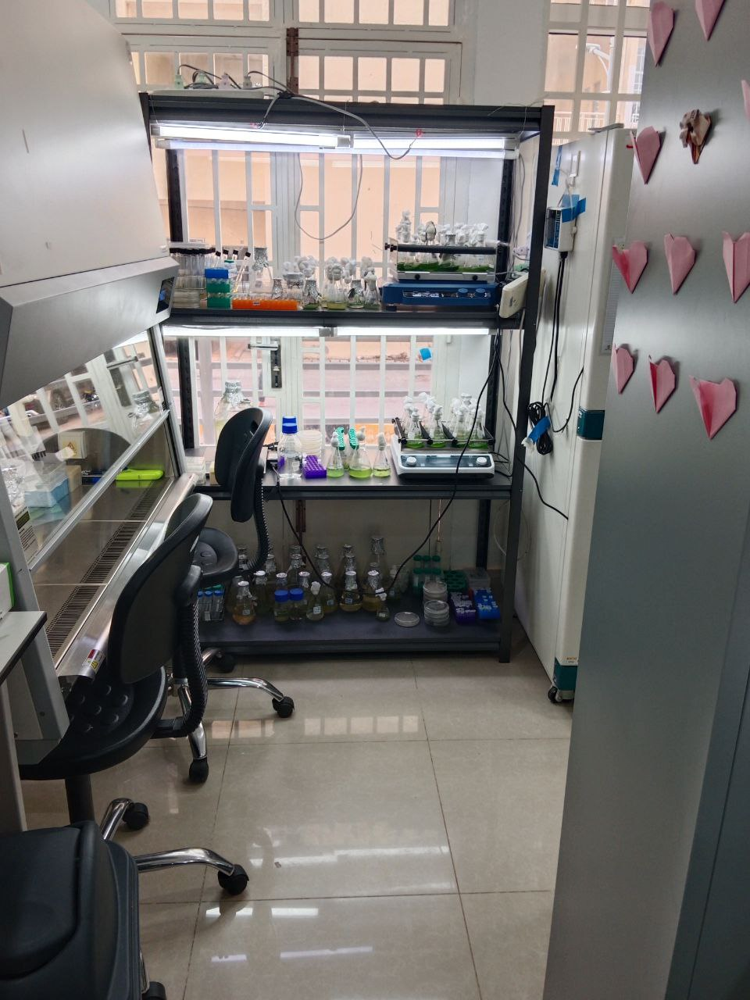
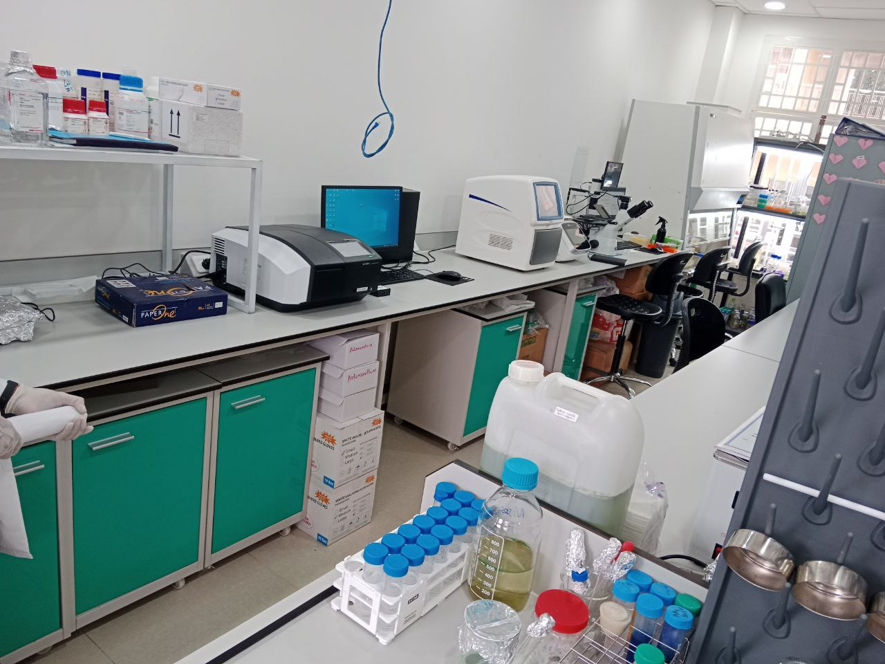
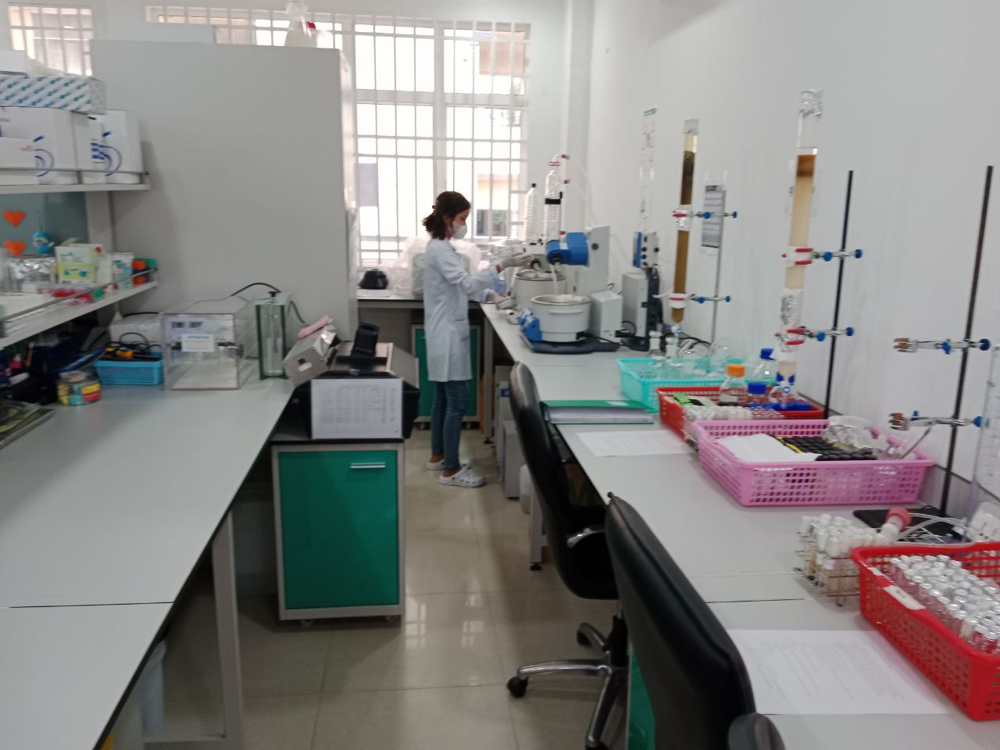
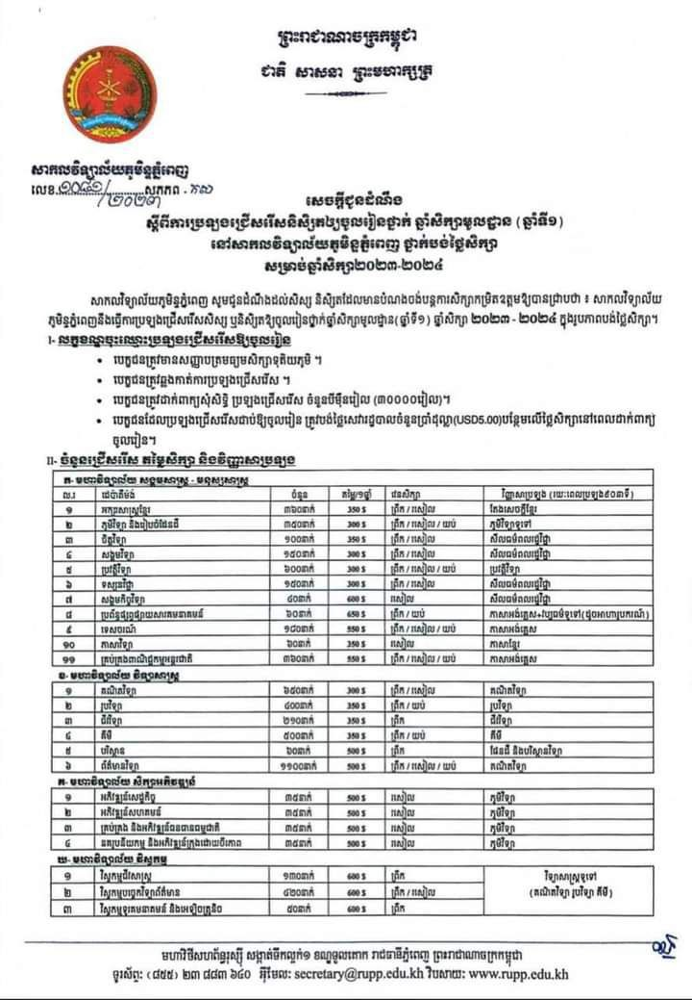
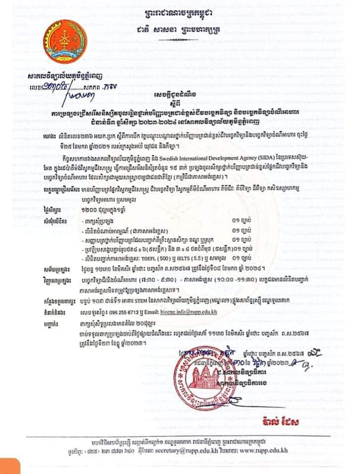

Visit College of egineer និងចុះឈ្មោះ
Visit College of egineer និងចុះឈ្មោះ   
     
បាក់ឌុបចប់ហើយ លទ្ធប្រលងក៏ចេញហើយដែរ តោះ! តោះ!នៅចាំអីទៀតមកចុះឈ្មោះប្រលងចូលរៀននៅ មិចជំនាញវិស្វកម្មជីវសាស្ត្រអោយលឿនមក នៅសកលវិទ្យាល័យភូមិន្ទយើងទេ ដោយគ្រាន់តែភ្ជាប់ជាមួយរូបថត សំបុត្រកំណើត នឹងក្រដាស់បញ្ជាក់និទ្ទេស1សន្លឹកមកចប់រួចរាល់បាត់ហើយគ្នានអីស្មុកស្មាញផង មិនចឹង មែនអត់ ។ ហេ ហេ ទៅណាមិនទាន់ប្រាប់អស់ផងមួយទៀតក៏ភ្លេចមកមើលអគារវិស្វកម្មផងណាមុខជំនាញនៅនេះយាយពីថា ល្អម្លេះទេ គន់មើលកន្លែងរៀន និងមន្ទីរពិសោធន៍គឺអោយប្អូនមានក្តីស្រម៉ៃជាអ្នកស្រាវជ្រាវចាប់ដកចិត្តមិនរួចទេមើលទៅ មក មក សិស្សច្បងរង់ចាំ កុំភ្លេចណា៎ មករៀននៅមុខជំនាញវិស្វកម្មជីវសាស្ត្រផងណា ។
នេះ ជាសកម្មភាពរបស់និស្សិតយើងចុះអនុវត្តការងារក្នុងបន្ទប់ពិសោធន៍ (ទ្រឹស្តីផ្សារភ្ជាប់ការអនុវត្ត)
សូមស្វាគមន៍មកកាន់ មហាវិទ្យាល័យវិស្វកម្ម នៃសកលវិទ្យាល័យភូមិន្ទភ្នំពេញ។ សម្រាប់ប្អូនដែលចង់បន្តការសិក្សាថ្នាក់បរិញ្ញាបត្ររង ឬថ្នាក់បរិញ្ញាបត្រ។ សូមចុះឈ្មោះជាមួយយើងខ្ញុំតាមរយៈអនឡាញ ឬក៏អាចទៅកាន់ សកលវិទ្យាល័យភូមិន្ទភ្នំពេញសាកសួរព័តនៅទីនោះដោយផ្ទាល់ក៏បាន៕
Welcome to the College EGERNEER of The University Royal phnom phenh of Cambodia . For Everyone who wishes to pursue for any AA and BA degrees of the study programms, please regester now on visit the campus of The University Royal phnom phenh of Cambodia.
Visit College of egineer និងចុះឈ្មោះសួស្តីប្អូនៗ ដែលមានបំណង ចង់បន្តការសិក្សាថ្នាក់បរិញ្ញាបត្រជាន់ខ្ពស់ អាចដាក់ពាក្យប្រលងបាន។ បញ្ជាក់: មិនមែនអាហាររូបករណ៍ទេឆ្នាំនេះ តម្លៃសិក្សាមានបញ្ជាក់ដូចខាងក្រោម!